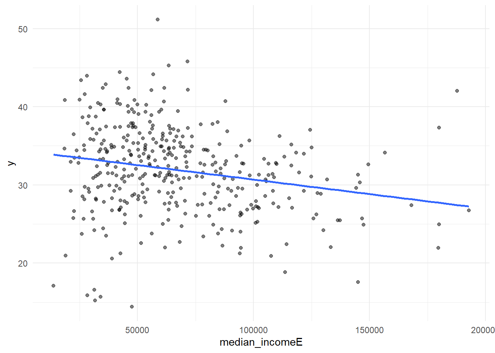
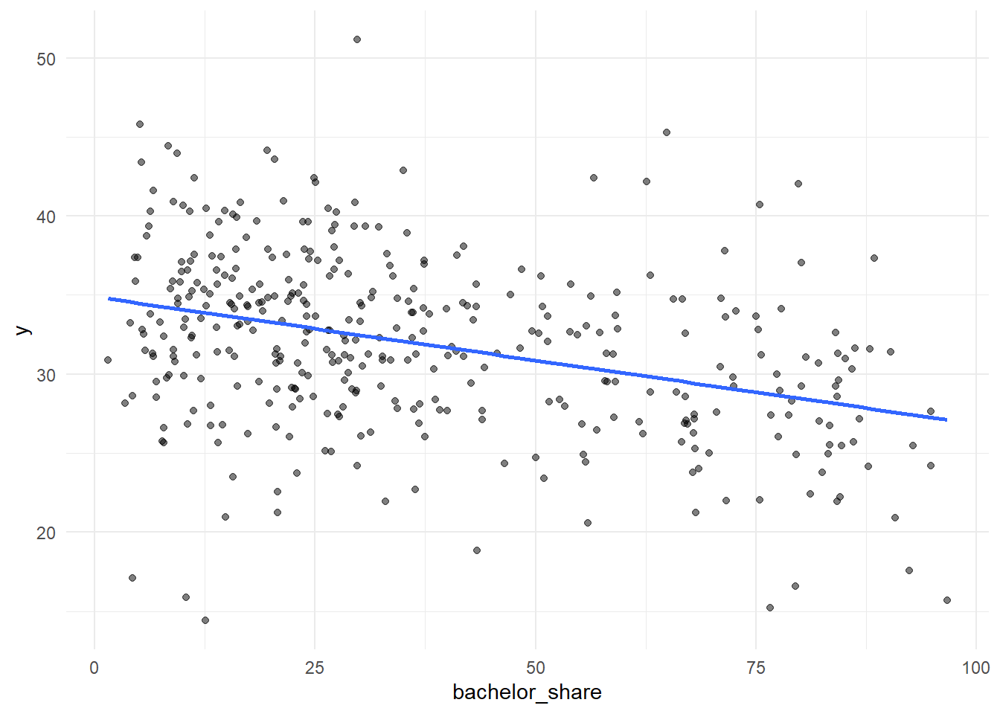
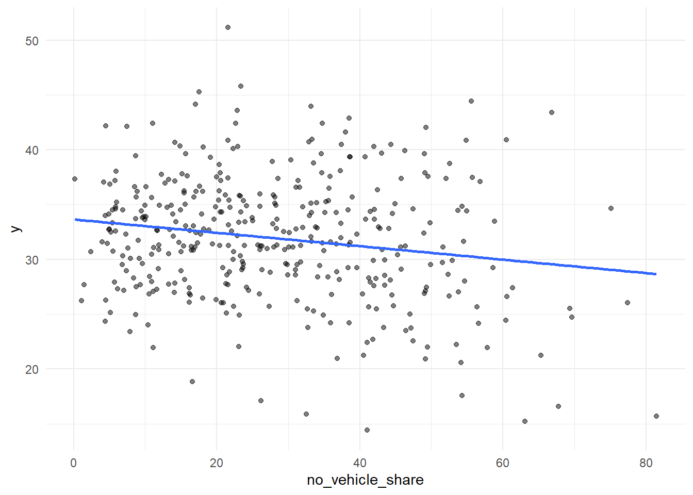
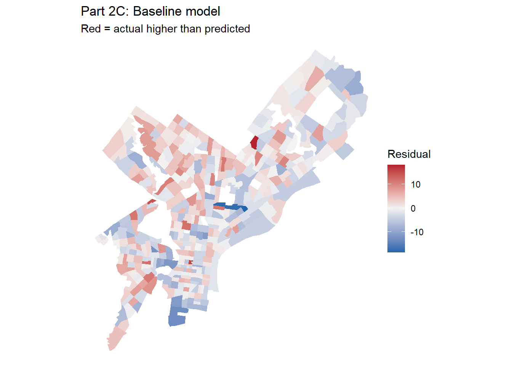
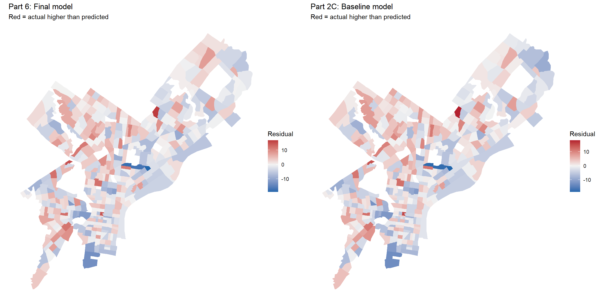
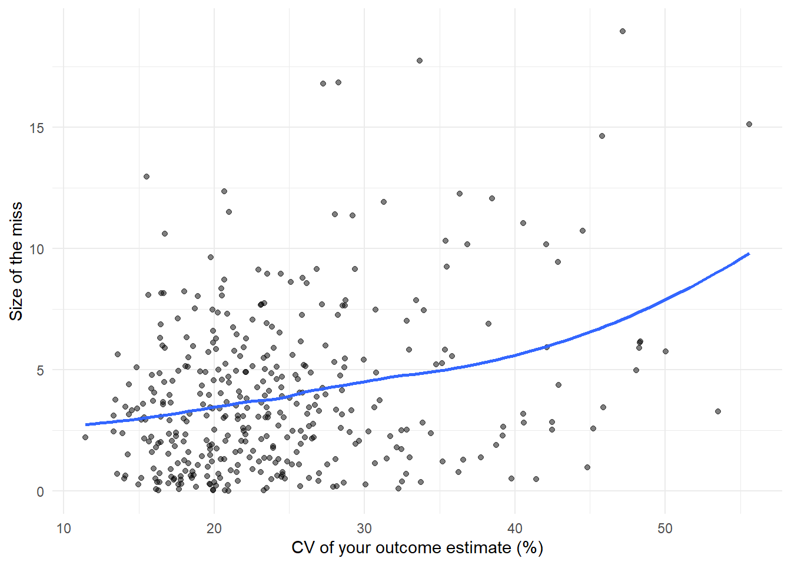

Code
library(tidyverse)
library(tidycensus)
library(sf)
library(caret)
Sys.getenv("CENSUS_API_KEY") != "" # should print TRUE[1] TRUEMUSA 5080 · Integrates Weeks 1–5 · Due Friday, October 16
This is not a competition. There’s no leaderboard and no target RMSE. The goal is to practice the full prediction workflow on a question you choose, and to find out what actually helps. Some features you’re sure will help won’t, and some you add on a whim will. Both are findings.
You’ll:
Timing. Parts 1–4 use only what we’ve covered through Week 5. You can finish them before the October 9 lecture. Part 5 is new material; the lecture explains it, and the instructions below give you the essentials.
Type the code yourself. The worked examples show the pattern. Your job is to apply it to your outcome and your data choices.
Every model is cross-validated on the same tracts with the same folds, so the rows in your model log are comparable. If a new variable has missing values, fill them (for example, 0 for a count, or the median with a note) or choose a different variable. The cv_rmse() helper below will stop and tell you if you break this rule.
Your outcome comes from the 2019–2023 ACS. Pull open data from 2023 or earlier (2021–2023 is ideal). Using 2025 data to predict a 2023 outcome uses information from the future, which a real prediction model would never have.
Don’t use any variable that’s built from your outcome or measures the same thing another way. Ask yourself: would an agency trying to predict this outcome for a tract have this variable? If the answer is “only because it’s basically the outcome,” leave it out.
library(tidyverse)
library(tidycensus)
library(sf)
library(caret)
Sys.getenv("CENSUS_API_KEY") != "" # should print TRUE[1] TRUEThis function runs 10-fold cross-validation with the same seed every time, so every model in your log is tested on the same folds. You don’t need to change it. Read it once so you know what it does.
ctrl <- trainControl(method = "cv", number = 10)
cv_rmse <- function(formula, data) {
df <- if (inherits(data, "sf")) st_drop_geometry(data) else data
vars <- all.vars(formula)
bad <- vars[sapply(vars, function(v) any(is.na(df[[v]])))]
if (length(bad) > 0) {
stop("These variables have NAs: ", paste(bad, collapse = ", "),
". Fill them or choose another variable (Rule 1: don't drop rows).")
}
set.seed(5080)
fit <- train(formula, data = df, method = "lm", trControl = ctrl)
fit$results$RMSE
}Every time you fit a new model, add a row. By the end, this table is the story of your assignment.
model_log <- tibble(
model = character(),
added = character(),
cv_rmse = numeric(),
notes = character()
)Pick a tract-level ACS variable for Philadelphia that matters for policy. Two outcomes are off limits: median gross rent (we did it in lab) and median home value (save it for A4).
Some ideas if you’re stuck:
| Outcome | Why an agency might care | ACS table |
|---|---|---|
| % of households with no vehicle | Transit planning | B08201 or B25044 |
| Mean travel time to work | Access to jobs | B08013_001 ÷ B08303_001 |
| % of people below poverty | Targeting services | B17001 |
| % of housing units vacant | Housing and blight | B25002 |
| % of households overcrowded | Housing conditions | B25014 |
Use load_variables(2023, "acs5") to browse and find exact variable codes.
Choose three to five ACS predictors for your baseline model. They should be things that plausibly relate to your outcome, but none of them may be built from your outcome (Rule 3).
philly_tracts <- get_acs(
geography = "tract",
state = "PA",
county = "Philadelphia",
variables = c(
total_pop = "B01003_001",
# Mean travel time to work = total commute minutes / workers who commute
travel_minutes = "B08013_001",
workers_commuting = "B08303_001",
# ACS baseline predictors
median_income = "B19013_001",
education_total = "B15003_001",
bachelors = "B15003_022",
masters = "B15003_023",
professional = "B15003_024",
doctorate = "B15003_025",
households_total = "B08201_001",
households_no_vehicle = "B08201_002"
),
year = 2023,
output = "wide",
geometry = TRUE
) %>%
st_transform(2272)
|
| | 0%
|
|= | 1%
|
|= | 2%
|
|== | 3%
|
|=== | 5%
|
|==== | 6%
|
|===== | 7%
|
|===== | 8%
|
|====== | 9%
|
|======= | 10%
|
|======== | 11%
|
|======== | 12%
|
|========= | 13%
|
|========== | 14%
|
|========== | 15%
|
|=========== | 16%
|
|============ | 17%
|
|============ | 18%
|
|============= | 19%
|
|============== | 20%
|
|=============== | 21%
|
|=============== | 22%
|
|================ | 23%
|
|================= | 25%
|
|================== | 25%
|
|=================== | 26%
|
|=================== | 27%
|
|==================== | 28%
|
|===================== | 29%
|
|===================== | 30%
|
|====================== | 31%
|
|======================= | 32%
|
|======================= | 33%
|
|======================== | 34%
|
|========================= | 35%
|
|========================= | 36%
|
|========================== | 37%
|
|=========================== | 38%
|
|=========================== | 39%
|
|============================ | 40%
|
|============================= | 41%
|
|============================== | 42%
|
|============================== | 43%
|
|=============================== | 44%
|
|================================ | 45%
|
|================================ | 46%
|
|================================= | 47%
|
|================================== | 48%
|
|================================== | 49%
|
|=================================== | 50%
|
|==================================== | 51%
|
|==================================== | 52%
|
|===================================== | 53%
|
|====================================== | 54%
|
|====================================== | 55%
|
|======================================= | 56%
|
|======================================== | 57%
|
|========================================= | 58%
|
|========================================= | 59%
|
|========================================== | 60%
|
|=========================================== | 61%
|
|=========================================== | 62%
|
|============================================ | 63%
|
|============================================= | 64%
|
|============================================= | 65%
|
|============================================== | 66%
|
|=============================================== | 68%
|
|================================================ | 69%
|
|================================================= | 70%
|
|================================================= | 71%
|
|================================================== | 72%
|
|=================================================== | 73%
|
|=================================================== | 74%
|
|==================================================== | 75%
|
|===================================================== | 76%
|
|====================================================== | 76%
|
|====================================================== | 77%
|
|======================================================= | 78%
|
|======================================================== | 79%
|
|======================================================== | 80%
|
|========================================================= | 81%
|
|========================================================== | 82%
|
|========================================================== | 83%
|
|=========================================================== | 84%
|
|============================================================ | 85%
|
|============================================================ | 86%
|
|============================================================= | 87%
|
|============================================================== | 88%
|
|============================================================== | 89%
|
|=============================================================== | 90%
|
|================================================================ | 91%
|
|================================================================= | 92%
|
|================================================================= | 93%
|
|================================================================== | 94%
|
|=================================================================== | 95%
|
|=================================================================== | 96%
|
|==================================================================== | 97%
|
|===================================================================== | 98%
|
|===================================================================== | 99%
|
|======================================================================| 100%philly_tracts <- philly_tracts %>%
mutate(
# Outcome: mean travel time to work, in minutes
y = travel_minutesE / workers_commutingE,
y_moe = tidycensus::moe_ratio(travel_minutesE, workers_commutingE,
travel_minutesM, workers_commutingM),
y_cv = (y_moe / 1.645) / y * 100,
# Bachelor's degree or higher among adults 25+
bachelor_share = (bachelorsE + mastersE + professionalE + doctorateE) /
education_totalE * 100,
# Households with no vehicle available
no_vehicle_share = households_no_vehicleE / households_totalE * 100
)Before you commit, check three things.
# How many tracts have no value for your outcome?
sum(is.na(philly_tracts$y))[1] 22# How reliable is it?
summary(philly_tracts$y_cv) Min. 1st Qu. Median Mean 3rd Qu. Max. NAs
11.44 18.73 22.57 24.41 27.84 55.58 22 philly_tracts %>%
mutate(reliability = case_when(
y_cv < 12 ~ "High",
y_cv <= 40 ~ "Moderate",
TRUE ~ "Low"
)) %>%
st_drop_geometry() %>%
count(reliability) reliability n
1 High 1
2 Low 47
3 Moderate 360# What does the distribution look like?
ggplot(philly_tracts, aes(x = y)) +
geom_histogram(bins = 30) +
theme_minimal()
If more than about a third of tracts have low reliability, consider a different outcome, or one built from larger counts. Write your reasoning either way.
Answer (2–3 sentences): What is your outcome, why would an agency want to predict it, and how reliable is it?
Your answer:
The outcome is mean travel time to work in minutes, calculated as total commute minutes divided by workers who commute. An agency could use it to identify places where residents face longer commutes and target transit or job-access improvements. By the assignment’s CV bands, 1 tracts have high reliability, 360 moderate reliability, and 25 low reliability; low reliability affects no more than about a third of tracts.
Filter once, here, and never again. Every later step uses tracts.
tracts <- philly_tracts %>%
filter(total_popE > 0,
!is.na(y),
!is.na(median_incomeE),
!is.na(bachelor_share),
!is.na(no_vehicle_share)
)
nrow(philly_tracts)[1] 408nrow(tracts)[1] 380Answer: How many tracts did you lose, and what kinds of places are they?
Your answer:
The filter removes 28 tracts. They are tracts with zero estimated population or a missing outcome or baseline predictor, so the exclusions reflect empty-population areas or incomplete ACS estimates rather than a choice to remove high-error tracts.
Plot your outcome against each predictor before modeling (the Week 3 habit).
# One scatterplot per baseline predictor
ggplot(tracts, aes(x = median_incomeE, y = y)) + geom_point(alpha = 0.5) +
geom_smooth(method = "lm", se = FALSE) + theme_minimal()
ggplot(tracts, aes(x = bachelor_share, y = y)) + geom_point(alpha = 0.5) +
geom_smooth(method = "lm", se = FALSE) + theme_minimal()
ggplot(tracts, aes(x = no_vehicle_share, y = y)) + geom_point(alpha = 0.5) +
geom_smooth(method = "lm", se = FALSE) + theme_minimal()
f1 <- y ~ median_incomeE + bachelor_share + no_vehicle_share
m1 <- lm(f1, data = tracts)
summary(m1)
Call:
lm(formula = f1, data = tracts)
Residuals:
Min 1Q Median 3Q Max
-18.5923 -3.3358 -0.0414 3.1926 18.1914
Coefficients:
Estimate Std. Error t value Pr(>|t|)
(Intercept) 3.705e+01 9.882e-01 37.491 < 2e-16 ***
median_incomeE -7.057e-06 1.453e-05 -0.486 0.627402
bachelor_share -7.409e-02 1.786e-02 -4.149 4.14e-05 ***
no_vehicle_share -6.817e-02 1.933e-02 -3.528 0.000471 ***
---
Signif. codes: 0 '***' 0.001 '**' 0.01 '*' 0.05 '.' 0.1 ' ' 1
Residual standard error: 5.149 on 376 degrees of freedom
Multiple R-squared: 0.1629, Adjusted R-squared: 0.1562
F-statistic: 24.38 on 3 and 376 DF, p-value: 1.943e-14model_log <- model_log %>%
add_row(model = "m1", added = "ACS baseline",
cv_rmse = cv_rmse(f1, tracts),
notes = "Mean commute minutes from ACS income, education, and vehicle access")
model_log# A tibble: 1 × 4
model added cv_rmse notes
<chr> <chr> <dbl> <chr>
1 m1 ACS baseline 5.13 Mean commute minutes from ACS income, education, a…On tracts it has not seen, the baseline model misses by about 5.13 minutes.
Save this map. You’ll compare it to your final model’s map in Part 6.
tracts <- tracts %>% mutate(resid_m1 = residuals(m1))
p_resid_m1 <- ggplot(tracts) +
geom_sf(aes(fill = resid_m1), color = NA) +
scale_fill_gradient2(low = "#2166ac", mid = "grey95", high = "#b2182b", midpoint = 0) +
theme_void() +
labs(title = "Part 2C: Baseline model",
subtitle = "Red = actual higher than predicted",
fill = "Residual")
p_resid_m1
Answer: Where do the residuals cluster? What might those places have in common that your model doesn’t know about? Use this answer to choose your open data layers in Part 3.
Your answer:
The largest positive residuals (actual commute time above prediction) are in tract GEOIDs 42101030700, 42101000403, 42101012203, 42101008601, 42101015200; the largest negative residuals are in 42101018802, 42101019502, 42101019200, 42101037300, 42101010600. Adjacent positive residuals on the map indicate places with longer commutes than the ACS-only model expects. Transit frequency, route coverage, and access to job centers are plausible missing local factors, so I will test station proximity and neighborhood context.
Many of the city’s datasets on OpenDataPhilly are served through a Carto SQL API. You send a SQL query in a URL, and it sends back data. Ask for format=GeoJSON and st_read() reads the result directly, just like the Indego feed in Week 4.
The pattern:
https://phl.carto.com/api/v2/sql?format=GeoJSON&q=SELECT ... FROM table_name WHERE ...Three pieces of SQL are all you need:
SELECT the_geom, column1, column2 chooses which columns come back. Always include the_geom, or you get no geometry.FROM table_name chooses the dataset.WHERE ... filters rows. Filter in the query, not in R. Some tables have millions of rows, and pulling everything will be slow or fail.This helper builds the URL for you. Spaces and symbols in a URL need encoding, and URLencode() handles that.
carto_get <- function(sql) {
url <- paste0("https://phl.carto.com/api/v2/sql?format=GeoJSON&q=", URLencode(sql))
st_read(url, quiet = TRUE)
}On a dataset’s OpenDataPhilly page, look for the API link. The table name is the word after FROM in the example query. To see what values a column takes before you filter on it, ask for a count in CSV format:
# What kinds of crime are in the incidents table in 2023?
url <- paste0("https://phl.carto.com/api/v2/sql?format=csv&q=",
URLencode("SELECT text_general_code, COUNT(*) AS n
FROM incidents_part1_part2
WHERE dispatch_date >= '2023-01-01' AND dispatch_date < '2024-01-01'
GROUP BY text_general_code ORDER BY n DESC"))
read_csv(url)# A tibble: 32 × 2
text_general_code n
<chr> <dbl>
1 Thefts 37054
2 Other Assaults 25986
3 Motor Vehicle Theft 22478
4 Vandalism/Criminal Mischief 17346
5 All Other Offenses 13334
6 Theft from Vehicle 13002
7 Fraud 7661
8 Aggravated Assault No Firearm 5134
9 Burglary Residential 3800
10 Aggravated Assault Firearm 3320
# ℹ 22 more rowsburglary <- carto_get(
"SELECT the_geom, text_general_code, dispatch_date
FROM incidents_part1_part2
WHERE dispatch_date >= '2023-01-01' AND dispatch_date < '2024-01-01'
AND text_general_code = 'Burglary Residential'"
) %>%
st_transform(st_crs(tracts)) # Carto returns EPSG 4326; translate immediately
nrow(burglary)[1] 3800Some records have no location. Drop them with filter(!st_is_empty(burglary)), and count how many you lost. Every point you drop is a point that won’t be counted.
These tables were available on Carto as of this fall. If a query fails, check the dataset’s OpenDataPhilly page for the current table name.
| Data | Table | Filter on | Notes |
|---|---|---|---|
| Crime incidents | incidents_part1_part2 |
dispatch_date, text_general_code |
Pick specific offense types |
| Shooting victims | shootings |
date_ |
Small enough to pull several years |
| 311 requests | public_cases_fc |
requested_datetime, service_name |
Use the count query above to see service names |
| Indego stations | (not Carto) https://www.rideindego.com/stations/json/ |
— | The Week 4 feed |
Datasets not on Carto often have a GeoJSON download link on their OpenDataPhilly page. st_read() reads those URLs too. For example, navigage to https://opendataphilly.org/, find a dataset that you’d like to import. I found city landmarks. On the page there is a link to a GeoJSON file. I simply right-clicked on that hyperlink and copied it and then used st_read() and pasted the link:
landmarks <- st_read(“https://hub.arcgis.com/api/v3/datasets/6b2fe4a0fbe14e0a8e6afceaea230b8e_0/downloads/data?format=geojson&spatialRefId=4326&where=1%3D1”)
Pull at least two layers that you think relate to your outcome. Base your choice on your Part 2C answer.
layer1 <- carto_get(
"SELECT the_geom, text_general_code, dispatch_date
FROM incidents_part1_part2
WHERE dispatch_date >= '2023-01-01' AND dispatch_date < '2024-01-01'
AND text_general_code = 'Burglary Residential'"
) %>%
st_transform(st_crs(tracts))
# Keep only records with geometry and report the number removed
n_burglary_before_geometry_check <- nrow(layer1)
layer1 <- layer1 %>% filter(!st_is_empty(.))
n_burglary_without_geometry <- n_burglary_before_geometry_check - nrow(layer1)
layer2 <- st_read("https://www.rideindego.com/stations/json/", quiet = TRUE) %>%
st_transform(st_crs(tracts))Answer: Why these layers? What do you expect them to capture that the ACS variables don’t?
Your answer:
Residential burglary points capture a neighborhood-safety condition, and Indego stations capture proximity to bike-share access. Neither is measured by the ACS predictors, which describe household and population characteristics. I expect these layers to add local context that could help explain commute times, although station distance is only a proxy for the transit options residents can actually use.
Every feature below reuses a Week 4 tool. The worked examples use burglaries and Indego stations; you build the same types from your own layers.
How many burglaries fall in each tract?
tracts <- tracts %>%
mutate(n_burglary = lengths(st_intersects(., burglary)))
summary(tracts$n_burglary) Min. 1st Qu. Median Mean 3rd Qu. Max.
0.000 4.000 7.000 9.458 13.000 48.000 A tract with no burglaries gets 0, not NA, so Rule 1 is safe.
Raw counts mostly measure tract size. A big tract has more of everything. Normalize by area, by population, or by housing units, depending on what makes sense for the thing you’re counting.
tracts <- tracts %>%
mutate(
area_sqmi = as.numeric(st_area(.)) / 27878400, # sq ft in a sq mile
burglary_per_sqmi = n_burglary / area_sqmi,
burglary_per_1k = n_burglary / total_popE * 1000
)If a tract has 40 residents and 3 burglaries, its rate is 75 per 1,000, which is a huge number built on tiny counts. Look at the tracts with the highest per-capita rates before you trust them. This is the Week 3 lesson about small denominators again.
How far is each tract from its nearest Indego station? Use the Week 4 pattern: find the nearest feature, then measure to it element by element.
stations <- st_read("https://www.rideindego.com/stations/json/", quiet = TRUE) %>%
st_transform(st_crs(tracts))
tract_pts <- st_point_on_surface(tracts) # always inside the tract, unlike a centroid
nearest_idx <- st_nearest_feature(tract_pts, stations)
tracts <- tracts %>%
mutate(dist_station_mi = as.numeric(
st_distance(tract_pts, stations[nearest_idx, ], by_element = TRUE)) / 5280)Sometimes the “thing” is a single location, such as City Hall as a stand-in for the center of the regional economy.
city_hall <- st_sfc(st_point(c(-75.1636, 39.9526)), crs = 4326) %>%
st_transform(st_crs(tracts))
tracts <- tracts %>%
mutate(dist_ch_mi = as.numeric(st_distance(tract_pts, city_hall)) / 5280)Build at least three spatial features from your own layers, and use at least two types (count, density, nearest distance, distance to a place). After each one, fit a model, cross-validate it, and log it.
# Feature 1: count burglaries in each tract
tracts <- tracts %>% mutate(n_burglary = lengths(st_intersects(., layer1)))
f2 <- update(f1, . ~ . + n_burglary)
m2 <- lm(f2, data = tracts)
model_log <- model_log %>%
add_row(model = "m2", added = "burglary count", cv_rmse = cv_rmse(f2, tracts),
notes = "Adds 2023 residential burglary count")
# Feature 2: normalize count by tract area
tracts <- tracts %>% mutate(area_sqmi = as.numeric(st_area(.)) / 27878400,
burglary_per_sqmi = n_burglary / area_sqmi)
f3 <- update(f2, . ~ . + burglary_per_sqmi)
m3 <- lm(f3, data = tracts)
model_log <- model_log %>%
add_row(model = "m3", added = "burglaries per square mile", cv_rmse = cv_rmse(f3, tracts),
notes = "Adds area-normalized 2023 burglary count")
# Feature 3: distance to nearest Indego station
tract_pts <- st_point_on_surface(tracts)
nearest_station_idx <- st_nearest_feature(tract_pts, layer2)
tracts <- tracts %>% mutate(dist_station_mi = as.numeric(
st_distance(tract_pts, layer2[nearest_station_idx, ], by_element = TRUE)) / 5280)
f4 <- update(f3, . ~ . + dist_station_mi)
m4 <- lm(f4, data = tracts)
model_log <- model_log %>%
add_row(model = "m4", added = "distance to nearest Indego station", cv_rmse = cv_rmse(f4, tracts),
notes = "Adds nearest-station distance in miles")
model_log# A tibble: 4 × 4
model added cv_rmse notes
<chr> <chr> <dbl> <chr>
1 m1 ACS baseline 5.13 Mean commute minutes from AC…
2 m2 burglary count 5.14 Adds 2023 residential burgla…
3 m3 burglaries per square mile 5.16 Adds area-normalized 2023 bu…
4 m4 distance to nearest Indego station 5.17 Adds nearest-station distanc…Answer: Which spatial feature helped most? Did any feature you expected to help do nothing, or make CV RMSE worse? Why might that be?
Your answer:
Among the spatial additions, burglary count has the lowest CV RMSE (5.14 minutes). Compared with the baseline, the spatial model(s) that made CV RMSE worse are m2, m3, m4. Burglary may add only an indirect signal about commuting, and Indego distance does not measure SEPTA service or job destinations, so either could add little or even increase CV error.
Watch the October 9 recorded lecture before you start this part. Below is a summary to work from.
So far, every predictor has entered the model as a straight line: each additional unit of X changes predicted Y by the same amount, everywhere. Transformations let the model bend. For prediction, the question is simply does the bend lower CV RMSE? For interpretation, each transformation changes what a coefficient means, so you need to know how to read it.
Keep your outcome y untransformed in this assignment. If you model log(y), your CV RMSE comes out in log units and can’t be compared to the other rows in your log. (Predicting a logged outcome well requires back-transforming, which is an A4 topic.)
Many urban variables are skewed: a few tracts have huge values, and most have small ones. Income, density, and counts are typical. A log compresses the long tail, so a model can use the difference between 1 and 10 as well as the difference between 100 and 1,000.
ggplot(tracts, aes(x = burglary_per_sqmi)) + geom_histogram(bins = 30) + theme_minimal()
ggplot(tracts, aes(x = log1p(burglary_per_sqmi))) + geom_histogram(bins = 30) + theme_minimal()
log(0) is -Inf, and it will break your model. Counts and densities often include zeros. Use log1p(x), which computes log(x + 1), for anything that can be 0.
Reading the coefficient: when a predictor is logged, a 1% increase in X goes with a change of about β/100 in Y, in Y’s units. With log1p, this reading is approximate for small values of X.
If your scatterplot bends (rising and then flattening, or falling and then rising), a squared term lets the line curve. Write it with I(), which tells R to do the arithmetic rather than read ^ as formula syntax.
m_sq <- lm(y ~ dist_ch_mi + I(dist_ch_mi^2), data = tracts)
summary(m_sq)
Call:
lm(formula = y ~ dist_ch_mi + I(dist_ch_mi^2), data = tracts)
Residuals:
Min 1Q Median 3Q Max
-18.5194 -3.0884 -0.0491 2.9256 16.3693
Coefficients:
Estimate Std. Error t value Pr(>|t|)
(Intercept) 25.87577 0.69995 36.968 < 2e-16 ***
dist_ch_mi 2.10433 0.25419 8.279 2.19e-15 ***
I(dist_ch_mi^2) -0.12422 0.01908 -6.511 2.39e-10 ***
---
Signif. codes: 0 '***' 0.001 '**' 0.01 '*' 0.05 '.' 0.1 ' ' 1
Residual standard error: 5.054 on 377 degrees of freedom
Multiple R-squared: 0.1911, Adjusted R-squared: 0.1868
F-statistic: 44.54 on 2 and 377 DF, p-value: < 2.2e-16Reading the coefficient: you can’t read either coefficient alone anymore. The effect of X depends on where you are along X. A positive linear term with a negative squared term means Y rises with X and then levels off or turns down. Plot the fitted curve to see it:
ggplot(tracts, aes(x = dist_ch_mi, y = y)) +
geom_point(alpha = 0.4) +
geom_smooth(method = "lm", formula = y ~ x + I(x^2), se = FALSE, color = "red") +
theme_minimal()
Sometimes a number works better as groups, either because the relationship isn’t smooth or because the categories are meaningful. You can make categories from any variable with case_when() or cut(), and then make sure R treats them as a factor.
tracts <- tracts %>%
mutate(
ring = case_when(
dist_ch_mi < 2 ~ "Core",
dist_ch_mi < 5 ~ "Inner",
TRUE ~ "Outer"
),
ring = factor(ring, levels = c("Core", "Inner", "Outer"))
)
tracts %>% st_drop_geometry() %>% count(ring) ring n
1 Core 79
2 Inner 134
3 Outer 167m_cat <- lm(y ~ ring, data = tracts)
summary(m_cat)
Call:
lm(formula = y ~ ring, data = tracts)
Residuals:
Min 1Q Median 3Q Max
-17.5146 -3.2886 -0.1537 3.1284 17.1430
Coefficients:
Estimate Std. Error t value Pr(>|t|)
(Intercept) 27.5537 0.5699 48.349 < 2e-16 ***
ringInner 4.3575 0.7185 6.065 3.21e-09 ***
ringOuter 6.4529 0.6917 9.329 < 2e-16 ***
---
Signif. codes: 0 '***' 0.001 '**' 0.01 '*' 0.05 '.' 0.1 ' ' 1
Residual standard error: 5.065 on 377 degrees of freedom
Multiple R-squared: 0.1876, Adjusted R-squared: 0.1833
F-statistic: 43.52 on 2 and 377 DF, p-value: < 2.2e-16Reading the coefficients: R turns a factor with k categories into k − 1 dummy variables. The category left out is the reference level (here, “Core,” the first level). Each coefficient is the difference from the reference: ringOuter is how much higher or lower predicted Y is in outer tracts compared to core tracts, holding everything else in the model constant. To change the reference, use relevel(ring, ref = "Outer").
If a category has only a handful of tracts, its coefficient is unstable, and in cross-validation some folds may not contain it at all. Aim for at least 20 tracts per category.
Try at least one of each: a log, a squared term, and a categorical variable. Choose which variables to transform based on your plots, not at random. Log each model.
# Log transform skewed median household income
tracts <- tracts %>% mutate(log_income = log1p(median_incomeE))
f_log <- update(f4, . ~ . - median_incomeE + log_income)
model_log <- model_log %>%
add_row(model = "m5", added = "log of median household income",
cv_rmse = cv_rmse(f_log, tracts), notes = "Replaces raw income with log1p(income)")
# Allow the station-distance relationship to curve
f_sq <- update(f4, . ~ . + I(dist_station_mi^2))
model_log <- model_log %>%
add_row(model = "m6", added = "squared distance to Indego station",
cv_rmse = cv_rmse(f_sq, tracts), notes = "Tests a curved station-distance relationship")
# Compare income quartiles as categories
tracts <- tracts %>% mutate(income_group = factor(dplyr::ntile(median_incomeE, 4),
levels = 1:4, labels = c("Q1_lowest", "Q2", "Q3", "Q4_highest")))
f_cat <- update(f4, . ~ . - median_incomeE + income_group)
m_cat <- lm(f_cat, data = tracts)
model_log <- model_log %>%
add_row(model = "m7", added = "income quartile factor",
cv_rmse = cv_rmse(f_cat, tracts), notes = "Replaces linear income with four income groups")
model_log# A tibble: 7 × 4
model added cv_rmse notes
<chr> <chr> <dbl> <chr>
1 m1 ACS baseline 5.13 Mean commute minutes from AC…
2 m2 burglary count 5.14 Adds 2023 residential burgla…
3 m3 burglaries per square mile 5.16 Adds area-normalized 2023 bu…
4 m4 distance to nearest Indego station 5.17 Adds nearest-station distanc…
5 m5 log of median household income 5.18 Replaces raw income with log…
6 m6 squared distance to Indego station 5.12 Tests a curved station-dista…
7 m7 income quartile factor 5.16 Replaces linear income with …Answer: Which transformation helped most? For your categorical variable, write one sentence reading one of its coefficients correctly, naming the reference level.
Your answer:
The transformation with the lowest CV RMSE is squared distance to Indego station (5.12 minutes). In the categorical model, Q1_lowest is the reference group: holding the other predictors in that model constant, Q4_highest tracts are predicted to have 1.5 minutes shorter mean commutes than Q1_lowest tracts.
Combine the features and transformations that earned their place, judged by CV RMSE, not p-values.
f_final <- y ~ log_income + bachelor_share + no_vehicle_share +
burglary_per_sqmi + dist_station_mi + I(dist_station_mi^2)
m_final <- lm(f_final, data = tracts)
summary(m_final)
Call:
lm(formula = f_final, data = tracts)
Residuals:
Min 1Q Median 3Q Max
-18.9600 -3.3069 -0.2447 3.0823 16.8562
Coefficients:
Estimate Std. Error t value Pr(>|t|)
(Intercept) 32.946564 11.106234 2.966 0.00321 **
log_income 0.201221 1.024462 0.196 0.84439
bachelor_share -0.074008 0.018556 -3.988 8.01e-05 ***
no_vehicle_share -0.044795 0.024659 -1.817 0.07008 .
burglary_per_sqmi 0.001320 0.005411 0.244 0.80738
dist_station_mi 1.004880 0.381098 2.637 0.00872 **
I(dist_station_mi^2) -0.110679 0.039763 -2.783 0.00565 **
---
Signif. codes: 0 '***' 0.001 '**' 0.01 '*' 0.05 '.' 0.1 ' ' 1
Residual standard error: 5.117 on 373 degrees of freedom
Multiple R-squared: 0.1796, Adjusted R-squared: 0.1664
F-statistic: 13.61 on 6 and 373 DF, p-value: 5.539e-14model_log <- model_log %>%
add_row(model = "final", added = "selected ACS, spatial, and transformed predictors",
cv_rmse = cv_rmse(f_final, tracts),
notes = "Candidate specification; compare CV RMSE with earlier models")
model_log# A tibble: 8 × 4
model added cv_rmse notes
<chr> <chr> <dbl> <chr>
1 m1 ACS baseline 5.13 Mean commute …
2 m2 burglary count 5.14 Adds 2023 res…
3 m3 burglaries per square mile 5.16 Adds area-nor…
4 m4 distance to nearest Indego station 5.17 Adds nearest-…
5 m5 log of median household income 5.18 Replaces raw …
6 m6 squared distance to Indego station 5.12 Tests a curve…
7 m7 income quartile factor 5.16 Replaces line…
8 final selected ACS, spatial, and transformed predictors 5.12 Candidate spe…tracts <- tracts %>% mutate(resid_final = residuals(m_final))
p_resid_final <- ggplot(tracts) +
geom_sf(aes(fill = resid_final), color = NA) +
scale_fill_gradient2(low = "#2166ac", mid = "grey95", high = "#b2182b", midpoint = 0) +
theme_void() +
labs(title = "Part 6: Final model",
subtitle = "Red = actual higher than predicted",
fill = "Residual")
# Place the final-model map first and the Part 2C baseline map second.
grid::grid.newpage()
grid::pushViewport(grid::viewport(layout = grid::grid.layout(nrow = 1, ncol = 2)))
grid::pushViewport(grid::viewport(layout.pos.row = 1, layout.pos.col = 1))
grid::grid.draw(ggplot2::ggplotGrob(p_resid_final))
grid::popViewport()
grid::pushViewport(grid::viewport(layout.pos.row = 1, layout.pos.col = 2))
grid::grid.draw(ggplot2::ggplotGrob(p_resid_m1))
grid::popViewport()
grid::popViewport()
Put your two residual maps side by side, or put them next to each other in the rendered document. Did the clusters from Part 2C shrink? Where did they stay?
The comparison figure places the Part 6 final-model map first and the Part 2C baseline map second. Mean absolute residual changes from 3.95 minutes in the baseline to 3.91 minutes in the final model. Of the five largest baseline misses by absolute size, 4 remain among the five largest final misses; those tracts are 42101018802, 42101030700, 42101019502, 42101019200. The maps show whether those persistent misses remain in adjacent tracts.
ggplot(tracts, aes(x = y_cv, y = abs(resid_final))) +
geom_point(alpha = 0.5) +
geom_smooth(se = FALSE) +
labs(x = "CV of your outcome estimate (%)", y = "Size of the miss") +
theme_minimal()
Answer in prose, drawing on your model log (incorporate our words of the day for bonus points. just kidding):
Your answer:
The best tested addition is squared distance to Indego station; the weakest is log of median household income. Their CV RMSEs are 5.12 and 5.18 minutes; CV error on unseen tracts is the basis for choosing features. In the final model, a one-percentage-point increase in bachelor’s-or-higher share changes predicted commute time by -0.07 minutes, holding other predictors constant. For tract GEOID 42101034701, with bachelor’s share closest to the sample median, the final model predicts 34.51 minutes.
The residual map and the feature comparisons suggest where the model needs more information. A useful next measure would be transit travel time and service frequency to job centers, using SEPTA schedules and Census LEHD/LODES job locations. Burglary is only an indirect measure of neighborhood context, and station distance does not capture routes, transfers, or frequency, so those spatial features can help little even when the underlying idea matters. The correlation between ACS outcome CV and absolute final residual is 0.28. A positive association means larger misses tend to occur where the ACS outcome is less reliable; it would suggest uncertainty contributes to the error, but it would not establish that uncertainty explains all of it. I would also compare the residual map with the reliability plot, since places with reliable ACS estimates can still have large prediction errors when the model omits important local conditions. The log-income model tests whether income has diminishing returns, the squared-distance model allows the station relationship to bend, and the income-group model allows step changes between quartiles. Whichever gives the smallest held-out error earns its place as a predictive feature, even if its coefficient is not statistically significant. These comparisons describe predictive association across tracts, not the causal effect of changing income, education, or infrastructure.
Render this document to HTML and submit the link on Canvas by Friday, October 16. I’ll miss you all terribly while I’m away. Please send letters or correspondences to my office mailbox.